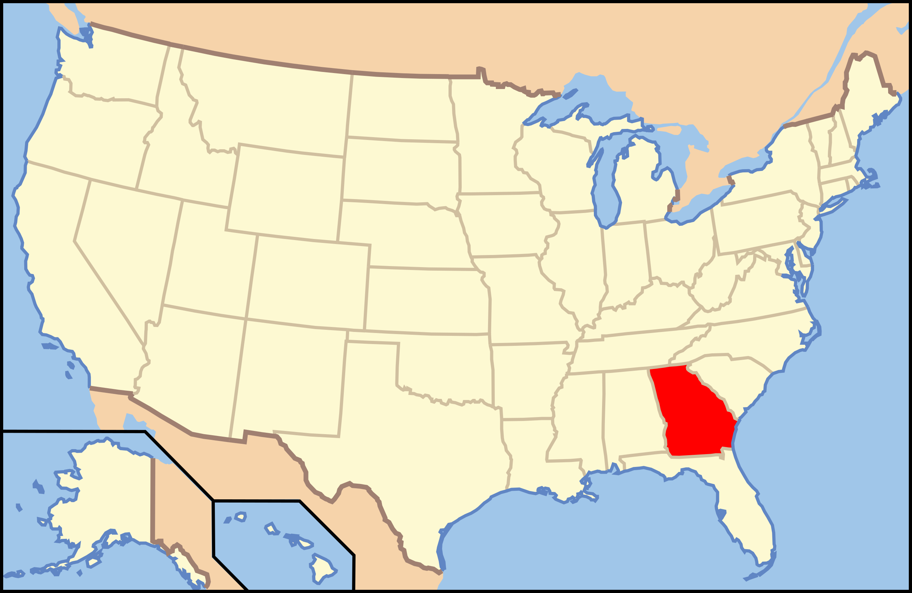

Georgia

1. The Waterfalls Trail - Cloudland Canyon State Park

Richard/Flickr
| Grade: Moderate |
|---|
| More Images |
| Trail Link |
2. The Marble Mine - James H. Floyd State Park

Georgia State Parks
| Grade: Short |
|---|
| More Images |
| Trail Link |
3. Lula Lake Land Trust - Lookout Mountain

Nicki K/Tripadvisor
| Grade: Moderate |
|---|
| More Images |
| Trail Link |
4. Providence Canyon - Providence Canyon State Park

SeanPavonePhoto/iStock via Getty Images Plus
| Grade: Moderate |
|---|
| More Images |
| Trail Link |